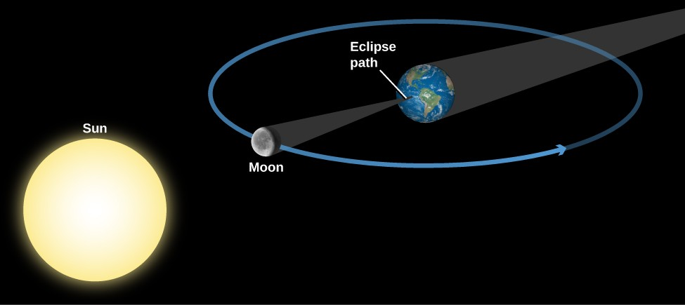
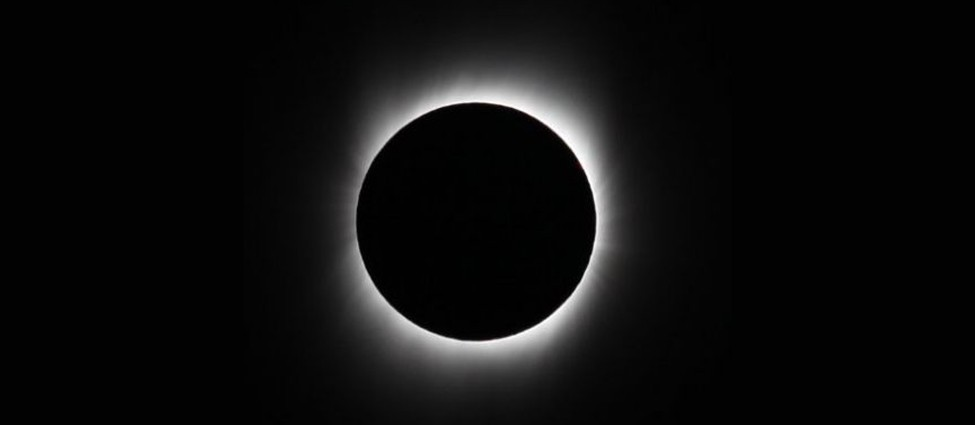
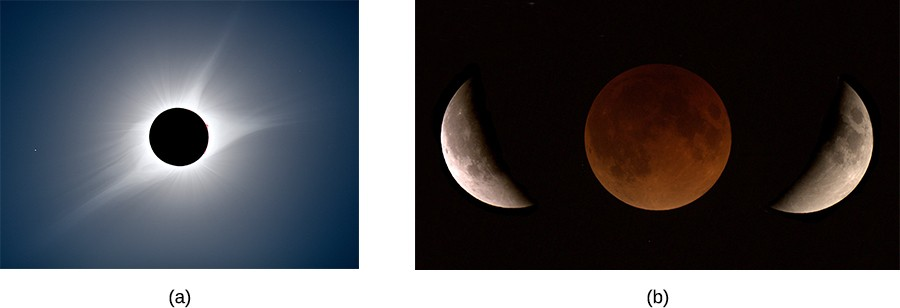

4.7 Eclipses of the Sun and Moon
4.7 Eclipses of the Sun and Moon
Learning Objectives
By the end of this section, you will be able to:
- Describe what causes lunar and solar eclipses
- Differentiate between a total and partial solar eclipse
- Explain why lunar eclipses are much more common than solar eclipses
One of the coincidences of living on Earth at the present time is that the two most prominent astronomical objects, the Sun and the Moon, have nearly the same apparent size in the sky. Although the Sun is about 400 times larger in diameter than the Moon, it is also about 400 times farther away, so both the Sun and the Moon have the same angular size—about 1/2°. As a result, the Moon, as seen from Earth, can appear to cover the Sun, producing one of the most impressive events in nature.
Any solid object in the solar system casts a shadow by blocking the light of the Sun from a region behind it. This shadow in space becomes apparent whenever another object moves into it. In general, an eclipse occurs whenever any part of either Earth or the Moon enters the shadow of the other. When the Moon’s shadow strikes Earth, people within that shadow see the Sun at least partially covered by the Moon; that is, they witness a solar eclipse. When the Moon passes into the shadow of Earth, people on the night side of Earth see the Moon darken in what is called a lunar eclipse. Let’s look at how these happen in more detail.
The shadows of Earth and the Moon consist of two parts: a cone where the shadow is darkest, called the umbra, and a lighter, more diffuse region of darkness called the penumbra. As you can imagine, the most spectacular eclipses occur when an object enters the umbra. Figure 4.21 illustrates the appearance of the Moon’s shadow and what the Sun and Moon would look like from different points within the shadow.
![Solar Eclipse. In panel (a), at top, the geometry of a solar eclipse is drawn as seen from above. At left the Sun is drawn as a large yellow disc. At center, a hypothetical spherical body is drawn as a blue disc. The shadow cast by this body is indicated by two yellow arrows which are drawn from the top of the Sun’s disk to the blue body; one touches the top of the body and continues to the right and one touches the bottom and continues to the right. To complete the shadow, two yellow arrows are drawn from the bottom of the Sun’s disk to the blue body; one touches the bottom of the blue disc and continues to the right and one touches the top and continues to the right. Beyond the blue disc on the right side of the diagram, four areas within the shadow are indicated with numbers corresponding to the images in panel (b). At position 1, closest to the blue disc, the eclipse is total. At positions 2 and 3 the eclipses are partial. At position 4, furthest from the blue disc, the eclipse is annular.](../assets/00663cbb-seclipses.jpg)
Figure 4.21. (a) The shadow cast by a spherical body (the Moon, for example) is shown. Notice the dark umbra and the lighter penumbra. Four points in the shadow are labeled with numbers. In (b) you see what the Sun and Moon would look like in the sky at the four labeled points. At position 1, you see a total eclipse. At positions 2 and 3, the eclipse is partial. At position 4, the Moon is farther away and thus cannot cover the Sun completely; a ring of light thus shows around the Sun, creating what is called an “annular” eclipse.
If the path of the Moon in the sky were identical to the path of the Sun (the ecliptic), we might expect to see an eclipse of the Sun and the Moon each month—whenever the Moon got in front of the Sun or into the shadow of Earth. However, as we mentioned, the Moon’s orbit is tilted relative to the plane of Earth’s orbit about the Sun by about 5° (imagine two hula hoops with a common center, but tilted a bit). As a result, during most months, the Moon is sufficiently above or below the ecliptic plane to avoid an eclipse. But when the two paths cross (twice a year), it is then “eclipse season” and eclipses are possible.
Eclipses of the Sun
The apparent or angular sizes of both the Sun and Moon vary slightly from time to time as their distances from Earth vary. (Figure 4.21 shows the distance of the observer varying at points 1–4, but the idea is the same.) Much of the time, the Moon looks slightly smaller than the Sun and cannot cover it completely, even if the two are perfectly aligned. In this type of “annular eclipse,” there is a ring of light around the dark sphere of the Moon.
However, if an eclipse of the Sun occurs when the Moon is somewhat nearer than its average distance, the Moon can completely hide the Sun, producing a total solar eclipse. Another way to say it is that a total eclipse of the Sun occurs at those times when the umbra of the Moon’s shadow reaches the surface of Earth.
The geometry of a total solar eclipse is illustrated in Figure 4.22. If the Sun and Moon are properly aligned, then the Moon’s darkest shadow intersects the ground at a small point on Earth’s surface. Anyone on Earth within the small area covered by the tip of the Moon’s shadow will, for a few minutes, be unable to see the Sun and will witness a total eclipse. At the same time, observers on a larger area of Earth’s surface who are in the penumbra will see only a part of the Sun eclipsed by the Moon: we call this a partial solar eclipse.
Between Earth’s rotation and the motion of the Moon in its orbit, the tip of the Moon’s shadow sweeps eastward at about 1500 kilometers per hour along a thin band across the surface of Earth. The thin zone across Earth within which a total solar eclipse is visible (weather permitting) is called the eclipse path. Within a region about 3000 kilometers on either side of the eclipse path, a partial solar eclipse is visible. It does not take long for the Moon’s shadow to sweep past a given point on Earth. The duration of totality may be only a brief instant; it can never exceed about 7 minutes.

Figure 4.22. Note that our diagram is not to scale. The Moon blocks the Sun during new moon phase as seen from some parts of Earth and casts a shadow on our planet.
Because a total eclipse of the Sun is so spectacular, it is well worth trying to see one if you can. There are some people whose hobby is “eclipse chasing” and who brag about how many they have seen in their lifetimes. Because much of Earth’s surface is water, eclipse chasing can involve lengthy boat trips (and often requires air travel as well). As a result, eclipse chasing is rarely within the budget of a typical college student. Nevertheless, a list of future eclipses is given for your reference in Appendix H, just in case you strike it rich early.
Appearance of a Total Eclipse
What can you see if you are lucky enough to catch a total eclipse? A solar eclipse starts when the Moon just begins to silhouette itself against the edge of the Sun’s disk. A partial phase follows, during which more and more of the Sun is covered by the Moon. About an hour after the eclipse begins, the Sun becomes completely hidden behind the Moon. In the few minutes immediately before this period of totality begins, the sky noticeably darkens, some flowers close up, and chickens may go to roost. As an eerie twilight suddenly descends during the day, other animals (and people) may get disoriented. During totality, the sky is dark enough that planets become visible in the sky, and usually the brighter stars do as well.
As the bright disk of the Sun becomes entirely hidden behind the Moon, the Sun’s remarkable corona flashes into view (Figure 4.23). The corona is the Sun’s outer atmosphere, consisting of sparse gases that extend for millions of miles in all directions from the apparent surface of the Sun. It is ordinarily not visible because the light of the corona is feeble compared with the light from the underlying layers of the Sun. Only when the brilliant glare from the Sun’s visible disk is blotted out by the Moon during a total eclipse is the pearly white corona visible. (We’ll talk more about the corona in the chapter on The Sun: A Garden-Variety Star.)

Figure 4.23. The corona (thin outer atmosphere) of the Sun is visible during a total solar eclipse. (It looks more extensive in photographs than it would to the unaided eye.) (credit: modification of work by Lutfar Rahman Nirjhar)
The total phase of the eclipse ends, as abruptly as it began, when the Moon begins to uncover the Sun. Gradually, the partial phases of the eclipse repeat themselves, in reverse order, until the Moon has completely uncovered the Sun. We should make one important safety point here: while the few minutes of the total eclipse are safe to look at, if any part of the Sun is uncovered, you must protect your eyes with safe eclipse glasses1 or by projecting an image of the Sun (instead of looking at it directly). For more, read the How to Observe Solar Eclipses box in this chapter.
Eclipses of the Moon
A lunar eclipse occurs when the Moon enters the shadow of Earth. The geometry of a lunar eclipse is shown in Figure 4.24. Earth’s dark shadow is about 1.4 million kilometers long, so at the Moon’s distance (an average of 384,000 kilometers), it could cover about four full moons. Unlike a solar eclipse, which is visible only in certain local areas on Earth, a lunar eclipse is visible to everyone who can see the Moon. Because a lunar eclipse can be seen (weather permitting) from the entire night side of Earth, lunar eclipses are observed far more frequently from a given place on Earth than are solar eclipses.
![Geometry of a Lunar Eclipse. The Sun is drawn at lower left and the Earth at upper right. Surrounding the Earth is a blue circle for the Moon’s orbit, with the Moon drawn at three positions along the circle. The Earth’s shadow is a dark grey cone extending from the night side of Earth toward the upper right, away from the Sun. At position “A”, to the right of Earth, the Moon has yet to enter Earth’s shadow and is seen as “Full moon (as seen from Earth)”. At position “B”, above and to the left of “A”, the Moon begins to enter Earth’s shadow – the eclipse has begun. At point “C”, above and to the left of “B”, the Moon has begun to leave Earth’s shadow.](../assets/af9cefc6-OSC_Astro_04_07_LEclipses.jpg)
Figure 4.24. The Moon is shown moving through the different parts of Earth’s shadow during a total lunar eclipse. Note that the distance the Moon moves in its orbit during the eclipse has been exaggerated here for clarity.
An eclipse of the Moon is total only if the Moon’s path carries it though Earth’s umbra. If the Moon does not enter the umbra completely, we have a partial eclipse of the Moon. But because Earth is larger than the Moon, its umbra is larger, so that lunar eclipses last longer than solar eclipses, as we will discuss below.
A lunar eclipse can take place only when the Sun, Earth, and Moon are in a line. The Moon is opposite the Sun, which means the Moon will be in full phase before the eclipse, making the darkening even more dramatic. About 20 minutes before the Moon reaches the dark shadow, it dims somewhat as Earth partly blocks the sunlight. As the Moon begins to dip into the shadow, the curved shape of Earth’s shadow upon it soon becomes apparent.
Even when totally eclipsed, the Moon is still faintly visible, usually appearing a dull coppery red. The illumination on the eclipsed Moon is sunlight that has been bent into Earth’s shadow by passing through Earth’s atmosphere.
After totality, the Moon moves out of the shadow and the sequence of events is reversed. The total duration of the eclipse depends on how closely the Moon’s path approaches the axis of the shadow. For an eclipse where the Moon goes through the center of Earth’s shadow, each partial phase consumes at least 1 hour, and totality can last as long as 1 hour and 40 minutes. Eclipses of the Moon are much more “democratic” than solar eclipses. Since the full moon is visible on the entire night side of Earth, the lunar eclipse is visible for all those who live in that hemisphere. (Recall that a total eclipse of the Sun is visible only in a narrow path where the shadow of the umbra falls.) Total eclipses of the Moon occur, on average, about once every two or three years. A list of future total eclipses of the Moon is in Appendix H. In addition, since the lunar eclipse happens to a full moon, and a full moon is not dangerous to look at, everyone can look at the Moon during all the parts of the eclipse without worrying about safety.
Thanks to our understanding of gravity and motion (see Orbits and Gravity), eclipses can now be predicted centuries in advance. We’ve come a long way since humanity stood frightened by the darkening of the Sun or the Moon, fearing the displeasure of the gods. Today, we enjoy the sky show with a healthy appreciation of the majestic forces that keep our solar system running.
Use the Solar and Lunar Eclipse simulation to explore the conditions of solar and lunar eclipses yourself.
How to Observe Solar Eclipses
A total eclipse of the Sun is a spectacular sight and should not be missed. However, it is extremely dangerous to look directly at the Sun: even a brief exposure can damage your eyes. Normally, few rational people are tempted to do this because it is painful (and something your mother told you never to do!). But during the partial phases of a solar eclipse, the temptation to take a look is strong. Think before you give in. The fact that the Moon is covering part of the Sun doesn’t make the uncovered part any less dangerous to look at. Still, there are perfectly safe ways to follow the course of a solar eclipse, if you are lucky enough to be in the path of the shadow.
The easiest technique is to make a pinhole projector. Take a piece of cardboard with a small (1 millimeter) hole punched in it, and hold it several feet above a light surface, such as a concrete sidewalk or a white sheet of paper, so that the hole is “aimed” at the Sun. The hole produces a fuzzy but adequate image of the eclipsed Sun. Alternatively, if it’s the right time of year, you can let the tiny spaces between a tree’s leaves form multiple pinhole images against a wall or sidewalk. Watching hundreds of little crescent Suns dancing in the breeze can be captivating. A kitchen colander also makes an excellent pinhole projector.
Although there are safe filters for looking at the Sun directly, people have suffered eye damage by looking through improper filters, or no filter at all. For example, neutral density photographic filters are not safe because they transmit infrared radiation that can cause severe damage to the retina. Also unsafe are smoked glass, completely exposed color film, sunglasses, and many other homemade filters. Safe filters include welders’ goggles and specially designed eclipse glasses.
You should certainly look at the Sun directly when it is totally eclipsed, even through binoculars or telescopes. Unfortunately, the total phase, as we discussed, is all too brief. But if you know when it is coming and going, be sure you look, for it’s an unforgettably beautiful sight. And, despite the ancient folklore that presents eclipses as dangerous times to be outdoors, the partial phases of eclipses—as long as you are not looking directly at the Sun—are not any more dangerous than being out in sunlight.
During past eclipses, unnecessary panic has been created by uninformed public officials acting with the best intentions. There were two marvelous total eclipses in Australia in the twentieth century during which townspeople held newspapers over their heads for protection and schoolchildren cowered indoors with their heads under their desks. What a pity that all those people missed what would have been one of the most memorable experiences of their lifetimes.
On August 21, 2017, a total eclipse of the Sun was visible across a large swath of the continental United States, and was seen by millions of people from around the country and the world (a). On April 8, 2024, another total eclipse of the Sun crossed the continental U.S. in another direction, and again there was great public interest, with many people traveling to the zone of totality.

Figure 4.25. (a) The eclipsed Sun August 21, 2017, showing remarkable detail in the Sun’s outer atmosphere. This is a composite of short, medium, and long exposures, as no single exposure can capture the huge range of brightness the Sun exhibits. (b) A total eclipse of the Moon seen over California on January 31, 2018. The Moon moves slowly into the Earth’s shadow, looks red when the eclipse is total and red sunlight refracts through the Earth’s atmosphere, and then slowly moves out of the shadow. (credit a: modification of work by Rick Fienberg, American Astronomical Socity/TravelQuest International; credit b: modification of work by Brian Day.)
For the August 2017 eclipse, the United States postal service issued a special commemorative stamp — the first ever with “thermochromic ink” which changes when you touch it.
Key Concepts and Summary
The Sun and Moon have nearly the same angular size (about 1/2°). A solar eclipse occurs when the Moon moves between the Sun and Earth, casting its shadow on a part of Earth’s surface. If the eclipse is total, the light from the bright disk of the Sun is completely blocked, and the solar atmosphere (the corona) comes into view. Solar eclipses take place rarely in any one location, but they are among the most spectacular sights in nature. A lunar eclipse takes place when the Moon moves into Earth’s shadow; it is visible (weather permitting) from the entire night hemisphere of Earth.
Key terms
- lunar eclipse: an eclipse of the Moon, in which the Moon moves into the shadow of Earth; lunar eclipses can occur only at the time of full moon
- solar eclipse: an eclipse of the Sun by the Moon, caused by the passage of the Moon in front of the Sun; solar eclipses can occur only at the time of the new moon
Source: Andrew Fraknoi, David Morrison, Sidney C. Wolff Astronomy 2e, OpenStax, 2022. Licensed under CC BY-NC-SA 4.0. Converted to Markdown; text unchanged, interactive embeds omitted.
-
Eclipse glasses are available in many planetarium and observatory gift stores, and also from the two main U.S. manufacturers: American Paper Optics and Rainbow Symphony. ↩